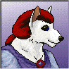
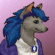

|
Datamancers |
This faction creates example bots for aspiring botmakers to learn from as well as take on bot requests from others. |
| Debuggers | This faction helps furres figure out why their bot isn't working properly. |
| Archivists | This faction writes tutorials for aspiring botmakers to learn from. |
| Overseers | This faction greets new furres to the dream, shows them around, and explains our rules and policies to them. |
Datamancers
| Name & Portrait | Personal Statement |
|
C.H McCormick Portrait Not Available |
Personal Statement Not Available |
|
Mys' Portrait Not Available |
Personal Statement Not Available |
Debuggers
|
Name & Portrait |
Personal Statement |
|
Grand High Archon  |
Can't get your bot code to work? Go to Grand. He specializes in debugging your code and helping you to understand what was wrong. |
Archivists
| Name & Portrait | Personal Statement |
|
Nehasha  |
Personal Statement Not Available |
|
tsjoepie Portrait Not Available |
Personal Statement Not Available |
Overseers
| Name & Portrait | Personal Statement |
| Red Dragon | As the Rah of the AICC, I have many duties to keep the guild running. I am the current webmaster and botmaster for the guild (Both positions are up for grabs), and I am head of the Overseers faction. As an Overseer, I will gladly tell you about the guild, dream, and bot and even give you a tour of the dream if you feel you need one. Please be patient if I don't respond right away, I have a tendency to wander Away From Furcadia to work on websites, bots, dreams, patches, etc. I'll get back to you as soon as I can. |